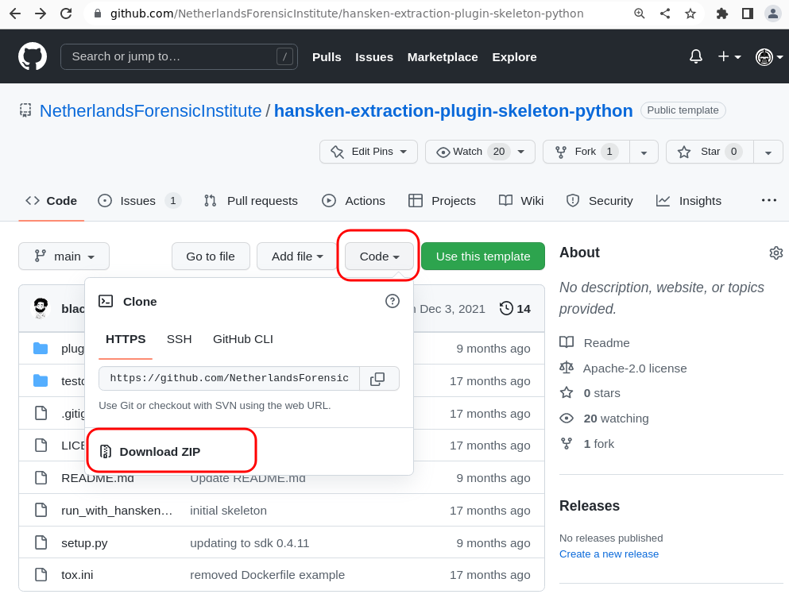
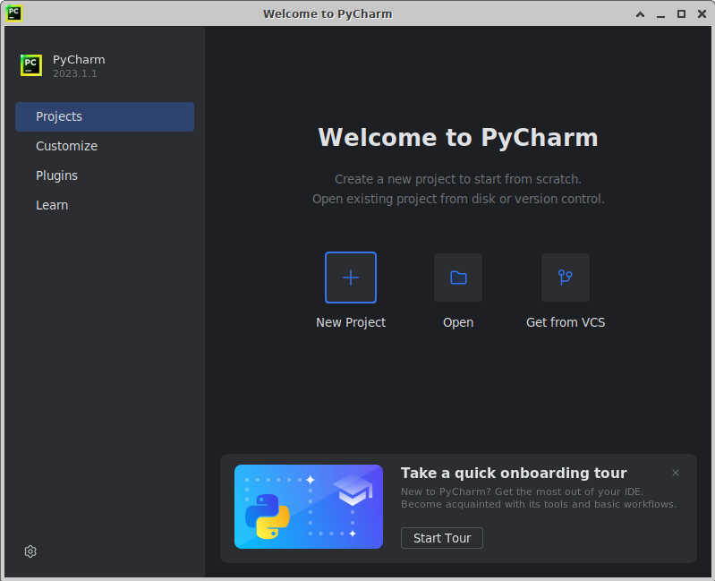
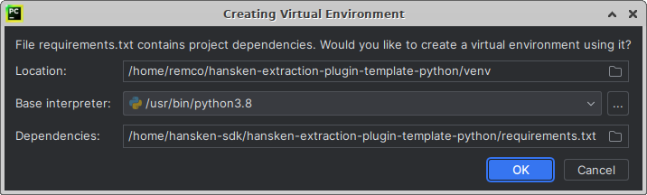
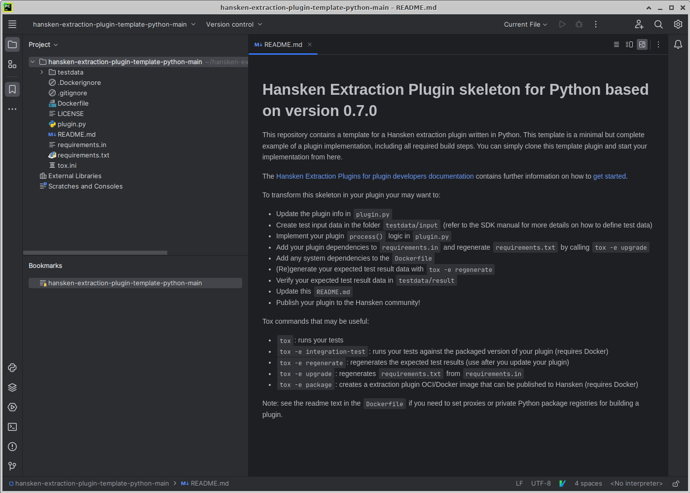

Getting started
Set up a development environment: step by step.
The following section describes how to set up a fully working development environment for extraction plugins with Python. This is written for those who are not comfortable setting up a working build environment. This is optional; advanced users may choose a different development environment setup, and can skip this section completely.
If you fail to set up a development environment, feel free to ask for help at our Discord channel.
Install required software on Ubuntu
In order to be able to develop Hansken Extraction Plugins in Python on Ubuntu, the following build tools need be installed on your system: python, pip, tox, Java, Docker.
Python, pip, tox, Java
To install, run the following commands in your terminal:sudo apt update sudo apt install python3.8 python3-pip tox default-jdk
You can check whether all versions are installed correctly by running the following commands (and validate the output):
python --version # should return version 3.8.10 or higher pip3 --version # should return version 20.0.2 or higher tox --version # should return version 3.11.2 or higher java -version # should return version 11.0.4 or higher
If the above software is installed, you can continue with “Install Docker”, or if you don’t want to install Docker, continue with “Install your IDE: Pycharm”.
Install required software on Windows.
In order to be able to develop Hansken Extraction Plugins in Python on Windows, follow the next steps:
For verification of the installation of each program we will use commands on the command prompt. This can be opened by clicking the Windows Start button and typing:
cmd
Then hit Enter . This will open the command prompt where you can enter the commands given in the following steps.
Python 3.8 or higher & pip
Download the installer from python.org/Downloads (click the yellow “Download Python” button) and run it to install Python and pip. Pip is the standard package manager for Python. It allows you to install and manage additional packages that are not part of the Python standard library, like the Extraction Plugins SDK.
Be sure to select the option “Add python to PATH”.
When the installation is complete, verify the installation by checking the Python and pip versions:
python --version # should return your downloaded Python version (>3.8.5) pip3 --version # should return 20.2.3 or higher
tox
Tox is used to automate and standardize testing in Python. Use Pip to install Tox with this command:pip install tox
Verify that Tox is installed by running:
tox --version # should return 3.23.0 or higher
Java JDK 11.0.4 (or higher)
Java JDK 11.0.4 or higher is needed to run the test framework of the Extraction Plugins SDK. This enables you to test without actually deploying the plugin in Hansken. Installing Java on Windows can be done in many different way, but for now we can not recommend one method. Please have a look at Install the Microsoft Build of OpenJDK for more details.java -version # should return 11.0.4 or higher
N.b. Make sure to set the environment variable in case the installed JDK is not detected by the system. You can follow the below-mentioned steps to set the environment variable:
Click the Windows start button
Type “advanced system settings”
Hit enter
Now click on Environment Variables, select Path under System Variables section and click on Edit. We need to add the path of installed JDK to system Path.
Click on New Button and add the path to installed JDK bin which is C:javajava-11jdk-11.0.4bin in our case.
Press OK Button 3 times to close all the windows. This sets the JDK 11 on system environment variables to access the same from the console.
If the above software is installed, you can continue with “Install Docker”, or if you don’t want to install Docker, continue with “Install your IDE: Pycharm”.
Install Docker (Ubuntu, Windows)
Installing Docker is a bit more complicated. The Docker website describes the installation instructions in detail. Please follow the instructions on docs.docker.gom/get-docker/ to install docker.
To check you have Docker installed correctly, run
docker --version # should return version 20.10.17 or higher
Note: if you run Docker inside a managed network, you might also need to configure proxies and/or certificates. Please contact your system administrator if you need help with this.
Set up your IDE: PyCharm
We recommend that you use an IDE to aid you in your development of Extraction Plugins. PyCharm is a good choice.
JetBrains has an excellent installation guide on their webpage: Click here to go to the Pycharm Installation Guide
Download an extraction plugin template (empty plugin)
You can download an extraction plugin template. This is an empty plugin, from which you can rapidly start your plugin development.
The template is hosted on GitHub: https://github.com/NetherlandsForensicInstitute/hansken-extraction-plugin-template-python. You can download a zip with the template from here. The below screenshot shows where the download button is located:

{kind=link}
Import the Extraction Plugins Skeleton in PyCharm
First unzip the skeleton plugin downloaded from the previous step.
Next, start PyCharm.
When PyCharm starts, choose “Open” and select the folder where you placed the Extraction Plugin Skeleton.
The following popup will appear, click OK .
The Extraction Plugins Skeleton is now loaded in PyCharm, which should look as follows:
Be sure to give the
README.mda read when you are done with the Prerequisites.
{kind=link}
{kind=link}
{kind=link}
Verify full setup
To verify that your system has been setup correctly, you can run the test suite in the Extraction Plugin Skeleton:
First, press
alt-F12at the same time to open a terminal in PyCharm in the project root folder.To run the tests of the Skeleton, run this command in the terminal from the root folder:
tox
The first time running tox may take a few minutes! Please be patient 😊
Tox will install all required plugin dependencies, and start your tests. N.b. The plugin template demonstrates how to build a plugin with tox. Some plugin developers choose a different tool than tox.
If your system has been set up correctly, the output should end with a summary like this:
py38: commands succeeded congratulations :)
This means the setup is finished. You now have everything installed to start coding your own plugin!
Next steps
Now that you have a working environment, you can start doing cool stuff. Please have a look at the following pages for more information:
Packaging: how to package your plugin and use it in Hansken
Run plugins with Hansken.py: run your plugin on a case without uploading the plugin to Hansken, useful for quick prototyping
Testing: how to write tests for your plugin
Debugging: if your plugin isn’t working as expected, you can debug it
Snippets: code snippets to demonstrate common plugin usage patterns